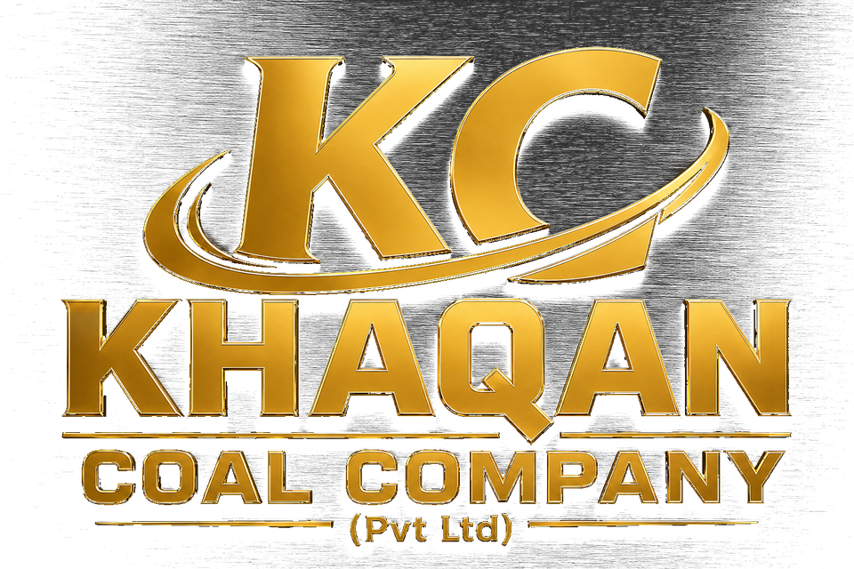
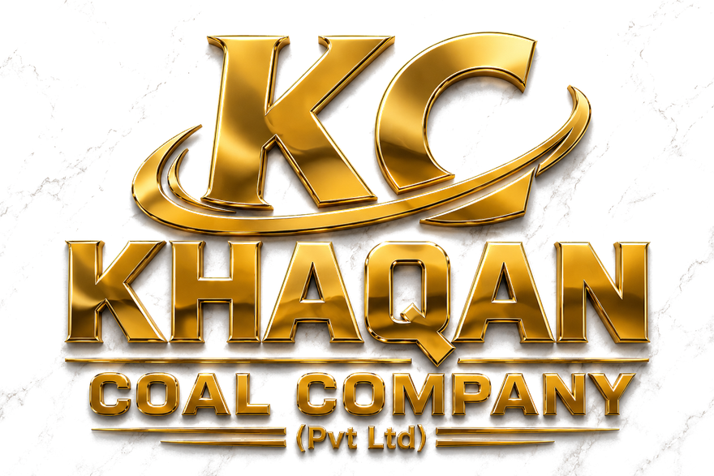

Rooted in Darra Adam Khel
We are proud to operate from a place known for its beauty, energy, and deep connection to the coal trade. Being local means we know the landscape — and respect the relationships that make business work.
Khaqan Coal Company is rooted in Darra Adam Khel, serving customers across Pakistan and preparing the next export chapter from Khyber Pakhtunkhwa.
We are proud to operate from a place known for its beauty, energy, and deep connection to the coal trade. Being local means we know the landscape — and respect the relationships that make business work.
Khaqan Coal Company carries the strength of a community behind its name — the Akkhurwal qom, first among the five qoms of Darra Adam Khel in coal supply. From our own coal mines to every contract we sign, that ownership brings responsibility: to deal fairly, to keep our word, and to create a future our people can stand behind.
Director Adnan Khan leads with a belief that a supplier should be more than a link in a chain. We want to be the dependable partner our customers can call, and a positive force in the place we call home.
Darra Adam Khel has developed through the efforts of many hardworking people. We are proud of Khaqan’s part in that story and committed to contributing to the next chapter with discipline and ambition.
The official Khaqan Coal Company emblem — carried on every page, document, and conversation.


Our story is part of a bigger one. The Adam Khel Afridis of Darra Adam Khel stand in five qoms — and the Akkhurwal qom, owners of the valley's leading coal operations, is the house Khaqan Coal Company calls home.
The qom at the top of coal supply in Darra Adam Khel — and ours. From Akhorwal ground, Khaqan Coal Company works its own coal mines and moves some of the most sought-after coal in the country.
One of the five houses of the Adam Khel — kin and neighbours in the valley's coal story.
A pillar of the Adam Khel confederation, part of Darra Adam Khel's trade and craft heritage.
Part of the valley's living network of families, workshops and mine roads.
Together with the other four qoms, completing the Adam Khel of Darra Adam Khel.
Steady leadership, local perspective, and a commitment to doing business with dignity.
Adnan Khan represents the next chapter of a company built on local trust. His focus is simple: bring reliability to every supply relationship while helping Darra Adam Khel continue to move forward.
Under his direction, Khaqan Coal Company keeps its values close — honesty in dealing, respect for people, and pride in the place where it all began.
Mining, movement, and the relationships around them are part of the Khaqan story. These field references bring that operating context into view.


A concise view of the identity, leadership, and local perspective behind Khaqan Coal Company.
Community ownership gives the business a strong sense of responsibility and belonging.
Director Adnan Khan keeps the company focused on dependable relationships and practical progress.
A hilly, green setting in Khyber Pakhtunkhwa that shapes how we see the work and the future.
Leading coal supply across Pakistan while preparing the next export chapter from Khyber Pakhtunkhwa.